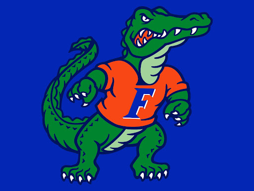

BIO OF KALEY CLARKE
My name is Kaley Clarke. I was born in Fort Walton Beach, Florida, but grew up in Newnan, Georgia, till I was 18. I obtained 33 college credit hours in high school through dual enrollment focusing mainly on academic classes, so I could go straight into my major upon my first year of college. I went to the University of West Georgia for my sophomore year, aka my first year of college, and took the rest of my academic classes for my degree there and then went into all art classes my second semester. My major is Graphic Design, but I am looking into double majoring in Art Administration to have experience in that for future jobs. I am a huge fan of the Florida Gators and really enjoy watching football. I also have a black lab that I love very much.


Index